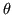
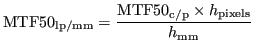
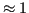
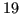
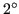
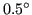
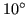

MTF Mapper user documentation
F. van den Bergh (fvdbergh#at#gmail#dot#com)
The MTF mapper package offers a collection of tools to measure Modulation
Transfer Function (MTF) values across edges in images.
It does this by computing the edge spread function of a step edge in an
image, using the method described by Khom [1]
(Section C provides a brief overview).
MTF50 values correspond to perceived sharpness of edges; this means that the
MTF mapper tools can be used to evaluate camera lens sharpness, as well as
autofocus behaviour.
MTF mapper offers fully automated operation, producing the following
outputs:
- Annotated images, where the MTF50 value of an edge is printed on top
of the edge itself;
- Profile data sets, where the MTF50 values are represented in a
one-dimensional projection of the image. This is the tool you want if you
are interested in objectively adjusting your DSLR autofocus fine-tuning (see
Section 4 for details of the method).
- MTF surface images, where you can visualise the MTF50 values
across the focal plane, to see the image centre MTF50 relative to edge MTF50,
for example.
MTF mapper expects images containing dark rectangular objects on light
backgrounds; the objects can be slightly out-of-square, e.g., trapezoids or
parallelograms, provided the interior angles are at least reasonably close
to 90.
Special test charts are required for Profile mode.
Section 3.2 describes them in more detail.
Special test charts are also required for MTF surface mode.
Section 3.3 describes them in more detail.
The two main programs of the MTF mapper package are called mtf_mapper
and mtf_mapper_gui. The GUI is just a front-end to the command line
tool.
After launching the GUI, you will be faced with a screen that looks like the
one portrayed in Figure 1.
Figure 1:
Screen shot of the MTF mapper gui
|
The right panel (called ``selection'') will contain a list of available
views once some files have been processed. Selecting a view from this list
will cause the relevant image to be displayed in the left panel. First off,
though, you will have to choose some files to process.
This is accomplished by selecting File/Open from the menu. You can select
multiple files to be processed; these files can be in a variety of image formats,
including .png, .jpg, .pgm, or any raw format supported by dcraw,
including .nef, .cr2, .pef, and .arw. Note that all
previous outputs will be cleared from the ``selection'' panel when new files are
selected. The implication of this is that all files must reside in the same
directory.
Once the selection panel has been populated, you can click on any of the
items to view the relevant data. Clicking on the image filename will display
the original image in the output window; its children will be the outputs
generated by the various modes. The checkboxes in the selection panel can be
used to enable/disable the various output image types. This is useful when
using the keyboard to move up or down the list; disabled output types will
be skipped.
You can drag the image in the output window to pan, or you may choose to use
the scroll bars (if present). The +, -, and = keys may
be used to zoom in, zoom out, or zoom to 100%, but you may have to click on
the image first to set focus.
That concludes the very brief overview of the MTF mapper GUI. The rest of
this document will describe what the various modes and output types can be
used for.
The main tool in the package is called mtf_mapper; you could simply
invoke it as
mtf_mapper <image> <working_dir> [-p|-r|-s|-a]
where <image> can be in a variety of image formats, including
PNG, JPG, TIFF, PNM, and more. A working directory, and the desired
combination of modes, must also be specified.
After successful extraction of MTF50 values from the edges found in
the image, the information is made available in several forms, called
``modes'', detailed next.
Annotation mode (-a or -annotate flag)
No explanation required, really. Input images are searched for rectangular
objects. Once found, the MTF50 value will be computed across each edge of
all the rectangular objects. The resulting value is drawn on top of each
edge, and the result saved as annotated.png by default.
Profile mode (-p or -profile flag)
Using a special test chart illustrated in Figure 2,
the program will construct a profile such as the one shown in
Figure 4, which was derived from the original image
shown downsampled in Figure 2(b). The chart should
be photographed at a angle.
Figure 2:
An illustration of the type of test chart used in profile
mode.
[Perspective chart]
[A photo of this type of chart at ]
|
Figure 3:
How the profile is constructed: MTF50 values are collapsed
horizontally onto the  -axis to form the profile.
-axis to form the profile.
|
Figure 4:
Example of profile generated by MTF mapper. Derived from the image
shown in Figure 2(b).
|
The large central block in the chart (Figure 2)
is called the reference block, and the edge of this block closest to the
centre of the chart (the bottom edge in Figure 2)
is called the reference edge.
The MTF50 values computed across the edges of all the blocks in the image
are projected onto the -axis1 of the image, thus forming a new set of data
points of the form (-value, MTF50 value). This process is illustrated in
Figure 3. The idea is that about half of the
chart will be in front of the plane of focus, and the other half behind. If
the depth of field is sufficiently shallow, then the closest and furthest of
the small blocks will be noticeably blurry. By projecting the measured
sharpness value (MTF50) of each block along horizontal lines
(Figure 3), we obtain a roughly bell-shaped
profile as shown in green on the left. The peak of this curve corresponds to the plane
of focus, and blocks that are further or closer than this plane are out of
focus to some degree. The blue line indicates the position of the
reference edge.
A complete profile in its usual orientation is shown in
Figure 4. The red dots represent individual MTF50
measurements, and the green curve is merely a smoothed representation of the
same data.
Generally, Profile mode is only intended to be used to calibrate or
evaluate the autofocus sensor of a DSLR; the details of this process are
described in Section 4. The objective is to adjust the
camera so that the blue line (reference edge, or focus position) lines up
with the peak of the green curve / red point cloud. If the blue line is far
from the peak, then you are experiencing either front- or back-focus. If
your chart was positioned at a angle so that the bottom edge
was closer to you, then front focus would mean that the blue line appears to
the left of the peak in the green curve. This depends on the orientation of
the camera, though, so you may want to take a look at the annotated image
(see Section 3.1) to orient yourself. The trick is to
remember that the peak in the green curve (or red point cloud) corresponds
to the actual plane of focus, whereas the blue line corresponds to
where MTF Mapper assumes you have placed the autofocus sensor when you
framed the shot.
MTF Surface mode (-s or -surface flag)
Figure 5:
Example of an MTF surface mode test chart
|
Using any test chart with a regular grid of rectangles (as illustrated in
Figure 5), you can measure the acuity of your
lens/camera system as it varies across the focal plane. Just shoot the chart
at a reasonable distance, making sure that it covers the entire viewfinder.
For optimal accuracy, the orientation of the blocks in the chart should be
approximately - with respect to the pixel rows or columns.
The charts produced by the generate_test_chart program included
with MTF Mapper already take care of this, so you should try to capture the
chart as straight as possible. Do note that this becomes more critical at
higher sharpness settings, i.e., if you have a really sharp lens and you are
sharpening your images excessively, then you have to observe the orientation
of the chart carefully. For typical lenses and unsharpened images,
chart alignment is not critical.
Figure 6:
Example of MTF50 image generated by MTF mapper
|
Figure 7:
Example of MTF50 surface generated by MTF mapper
|
Surface mode produces two images: one representing a 2D
representation of MTF50 values across your image, and another showing the
same data rendered as a 3D surface. Examples of both can be seen in
Figures 6 and 7. These
MTF maps show that this particular lens (a Nikon Nikkor 35 mm F1.8 prime
lens, stopped down to F2.8) is fairly sharp, but appears to have some
strange asymmetrical defect -- not that you can tell by looking at photos
taken with this lens, though.
Autofocus fine-tuning
Figure 8:
Illustration showing the top view of the autofocus calibration
set-up
|
Figure 9:
Where to place your autofocus sensor
|
The following steps can be used to calibrate the autofocus fine-tuning of a
DSLR:
- Figure 8 illustrates the basic set-up. The
distance is the ``distance to chart'', and the angle is the
``angle with respect to the test chart''.
- Print out the test chart at a large enough scale. Ideally, your
test chart must be large enough so that you can use it at a distance of
 the focal length of your lens. Appendix A offers
some advice on printing your test charts.
Position your camera so that you see the chart from an angle of at least -- the idea is that you
want some of the small blocks to be in front of the plane of focus, and some
of the blocks behind the plane of focus; this is easier to achieve at angles
of and smaller. The reference edge (Section 3.2) should be
exactly at the plane of focus, but since you are reading this, I take it you
are still trying to adjust the autofocus fine-tuning to achieve this.
- You must use a tripod, and it is recommended that you use a remote
shutter release or a timed shutter release to minimise vibrations.
- You should have enough
light for an exposure value of 10-11 (for example, ISO 100 F/1.8 at 1/320
s), which translates into about 2500-5000 lux. This amount of light is
required to achieve consistent performance from
the AF sensor. I use indirect sunlight to reach these levels.
- Set your camera to AF-S (single-servo AF). Select a single AF
point -- the centre AF sensor is recommended. This is critical, as any
other AF mode / sensor selection will not produce the desired results.
On Nikon bodies, I like
to use the AF-ON mode so that the camera only focuses when I ask it to. For
adjusting your AF fine tuning settings, you should use a single AF
operation, i.e., press and hold the AF-ON button until focus lock is
achieved, then release the button. Do not focus a second time.
- Aim the AF sensor reticule so that it straddles the reference edge
(see Figure 9). Take care that the autofocus sensor
is sufficiently far away from other edges (e.g., the horizontal edges of the
reference block in Figure 9, or any of the small
blocks). Keep in mind that the actual sensing area of the autofocus sensor
is typically larger than the reticule you see in the viewfinder, so leave
some padding.
- Manually set the focus of your lens to the near limit, or to
infinity.
- Initiate one AF operation.
- Capture a shot of the test chart. Lower ISO values are better, since MTF
measurements are sensitive to noise.
- Feed the captured image through MTF mapper to produce a profile
(such as illustrated in Figure 4. The vertical blue
line denotes the position of the autofocus reference edge (at least, the one
you should have been using to focus ...). The green curve (or red
points) records the MTF50 values measured along the long axis of the image.
Since the test chart was at a angle with respect to the lens
axis, the long axis of the image is a measure of the distance from the
camera. MTF50 values measured at different
 -values (in the
Figure 4) thus indicate the
sharpness, or degree of focus, at that specific distance from the camera.
The peak of the green curve represents the plane of focus -- the objective
is to line up the peak of the green curve with the blue vertical line.
-values (in the
Figure 4) thus indicate the
sharpness, or degree of focus, at that specific distance from the camera.
The peak of the green curve represents the plane of focus -- the objective
is to line up the peak of the green curve with the blue vertical line.
- This procedure (steps 7-10) should now be repeated at various autofocus
fine-tuning settings on your camera. You should be able to see the peak of
the green curve shift left or right as you adjust this value. I recommend
capturing your images in batches, first stepping your autofocus fine-tuning
through the range in large steps, running the images through MTF mapper, and
then repeating this in the optimal range with smaller steps until you are
satisfied that you have calibrated your autofocus fine-tuning to the desired
level of accuracy.
Please note that this procedure of calibrating autofocus fine-tuning on your
DSLR is based on some of my own assumptions, which have not been tested
rigorously before the release of this software. Here follows some
background; you are most welcome to skip this section.
Phase-detection autofocus in DSLR cameras works by collecting light from
opposite sides of the lens (the aperture, really), if the article on
Wikipedia is
accurate2. These two
beams of light are steered to two independent linear sensors -- I suspect
that they are simply small strip-like CMOS sensors nowadays. Using
cross-correlation, the AF module then measures the phase shift between the
data collected from the two linear sensors; this phase shift will directly
correspond to the degree of defocus. With this information, the AF module
can then drive the AF motor by approximately the correct amount to
eliminate the phase difference between the signal received by the two
linear sensors, which should bring the object under the relevant AF sensor
into focus.
So the real question is: what algorithms do the AF modules really use to
measure the phase shift? Well, I currently do not know. If you design AF
modules, please fill me in, and I can update my test charts to agree more
closely with what the AF modules expect to see. Many AF test charts on are
available on the Internet, however, most of them use thick line (bar-shaped)
target to draw the AF sensor's attention. Someone on the Internet (now,
there is a reference you can count on) pointed out that bar targets are a
poor choice, because they may be too thin for the AF sensor to detect. I
found this argument appealing, because the AF sensor must have limited
resolution. There is an additional problem with a bar target: which edge of
the bar target is the AF module going to focus on? And this process led me
to the design of my own test charts. Rather than using a bar as an AF
target, why not use a step edge? If the AF module really does use
cross-correlation to measure the phase difference, then a step edge would
produce the best possible results. There would also be not ambiguity as to
where the sensor is focusing, since the step edge only has one feature to
focus on.
Well, it seems to work. The results presented in
Appendix B seem to support this. At least for my
camera bodies and lenses.
I also found it annoying to have to use visual inspection to determine
whether I have set the autofocus fine-tuning optimally. Visual
inspection certainly is a quick way to evaluate the results in the field, but I want to see some
objective data. I want to know that I have calibrated my lenses
perfectly. Anyhow, if you have made it this far, you probably understand.
MTF50 is certainly not the final word on image acuity (read the excellent
Zeiss papers for a start), but it does provide a reasonable relative measure
for the autofocus calibration problem. The MTF50 estimates extracted by MTF
Mapper are reasonably accurate (see Appendix D), at least as
far as internal consistency goes with my own edge image generator. You
should be able to obtain repeatable results within a 5% relative margin.
Lastly, you should know one very important thing about autofocus systems:
they are not perfect. The tolerances of the AF system (AF module, lens
drive accuracy, etc.) are such that they strike a balance between speed and
accuracy. In other words, the AF system only takes one stab at the problem:
one phase difference measurement results in one focus motor action. The
implication of this is that the AF system will only adjust focus so that it
is ``good enough'', that is, until the circle of confusion drops below the
specified limit. For a Nikon D7000, the circle of
confusion limit is 0.02 mm, which translates into an MTF50 value of around
36 lp/mm. The focus plane may therefore be set to any position within the
range of distances that yield a sharpness of at least 36 lp/mm.
With MTF mapper, you can empirically observe this effect:
manually set focus to infinity, switch to AF, capture image. Now select near
focus (manually), switch to AF, capture image. Comparing the profile plots
of produce by MTF mapper you should be able to see which image was captured
from which direction, and the distance between the peaks in the profiles
should roughly correspond to this ``zone of acceptable focus'' for that
subject distance and magnification.
Two additional utilities are included in the MTF mapper package.
Rectangle generator
The generate_rectangle utility will create a synthetic image of a
rectangle, sampled with a specified Gaussian point spread function. The
rectangle images generated with this utility therefore have a known MTF50
value, which was calculated analytically.
In the current implementation, the Gaussian noise that is optionally added
to the image is not taken into consideration in the analytical calculation
of the expected MTF50 value. This noise certainly makes it more challenging
for software tools to compute the MTF50 values from the generated images,
but it should not bias the result in any way.
Either way, the generate_rectangle utility is useful during
testing, and can be used to cross-calibrate the mtf_mapper utility
with other packages available for computing MTF50 values. (If you have
access to Imatest, please send me some results. Your feedback will help to
improve MTF Mapper).
The generate_test_chart utility can be used to generate SVG files
containing various test charts. Currently, it can generate ``perspective''
charts that are suitable for DSLR autofocus calibration, as well as
empirical measurements of the depth of field of your equipment. It can also
generate ``grid'' charts that contain squares arranged in a regular grid,
which can be used to measure the flatness of field of your
equipment.
Currently, the MTF mapper utilities do not separate MTF50 values into
sagittal and meridional orientations, although such an option would be
relatively straightforward to add, and is planned for a future version.
A bit of a misnomer, since I have yet to receive actual questions :)
- Your program gave me a value of cycles per pixel. Is this any
good? Answer: According to Norman Koren
(http://www.imatest.com/guides/modules/sfr), a value of 0.33 cycles
per pixel is pretty good for unsharpened raw images (emphasis mine).
This is somewhat misleading, though, since expressing MTF50 as c/p is not
independent of the sensor resolution, and Norman may have been referring to
an 8 MP sensor. Take, for example, a sample of the
Nikkor 35 mm f/1.8 prime lens on a D40 body. This combination achieves MTF50
values of around 0.28 c/p. The same lens on a D7000 body achieves around
0.22 c/p. If these values are expressed as line pairs per millimetre
(lp/mm), we actually see 36 lp/mm on the D40, and 46 lp/mm on the D7000. In
this case, it means that the lens is actually able to resolve more detail
than what the D40 could capture. This also explains why I suddenly thought
the lens looked softer on the D7000 -- the per-pixel sharpness was
definitely lower, even though the effective sharpness was higher.
So while c/p units are convenient because they do not require knowledge of the
pixel (or sensor) size, they are not portable to other sensors for the very
same reason.
I prefer to use lp/mm when comparing lenses, but c/p are more natural for
synthetic images. Keep in mind that a Bayer colour filter sensor camera
will never be able to give you ``perfect'' MTF50 values of 0.5 c/p, and that
anything above 0.25 c/p is actually pretty good (before sharpening),
all things considered.
- Cycles per pixel? I wanted lw/ph or lp/mm! Answer: Support
has been added for lp/mm by specifying a pixel size with the
--pixelsize option.
You can also convert manually using the
following relationship:
where
is the image height in mm, and

is the image height in pixels.
Tips for printing the test charts
I have printed the MTF Mapper test charts using a variety of printers, and
have the following advice to offer:
- If you are printing on paper, you should aim to use the thickest
paper available. Something like 120 g/m is probably the bare minimum.
All my charts printed on standard 80 g/m paper warped horrendously
with changes in humidity.
- The test charts work best when they are quite flat. I have worked
with an A0 print of the perspective chart that was simply taped to a
plastered wall, and everything seemed to be fine. If, on the other hand,
you are using the grid chart to look for MTF variations in the focal plane
(i.e., Surface mode), then it is critical to keep the chart perfectly
flat. I have found that foam board works very well, especially if you use
a spray glue to fix the printed chart to the foam board.
- Even spray glue combined with a foam board is not good enough to
prevent thin paper from warping due to changes in humidity. If you plan on
using a chart more than once, you must use thick paper.
- I have yet to try this myself, but a local printer can print on a
self-adhesive vinyl sheet. This should be immune to humidity, but
obviously this will be much more expensive than printing on plain paper.
- Print quality is probably not critical when using the perspective
charts -- I have used badly printed (streaky, not quite solid) charts,
and that seemed to be OK on an A0 scale.
- Print the largest chart you possibly can for a given focal length.
In practice, I have found that the A0-size charts work very well for
lenses shorter than 50 mm, since they allow me to keep the chart at a
realistic distance. I have yet to perform extensive tests on A4 charts,
but I suspect they are only safe to use with longer focal lengths
(e.g., 200 mm or longer). Furthermore, at greater distances, you can get
away with lower quality prints -- 300 DPI prints are fine on an A0 chart,
but my become a problem on A4 charts.
- One last tip: If you want the chart to be perfectly aligned at
degrees, you can use a small mirror mounted on a block
(like the one illustrated in Figure 10). Line
up your tripod so that you see straight down the barrel of your lens in
the mirror. This level of precision is probably not necessary, and simply
measuring out a right-angled triangle to place your tripod is good enough
for most users.
Flat 45 test charts vs. perpendicular charts
Many DIY test charts on the web are of the degree type, i.e., you
simply print out the chart with whatever printer you have, and you shoot the
chart at a angle. These charts have been criticized severely in
the online fora, sometimes with reason. The main argument is that these
charts often have a line (thick or thin) in the centre of the chart that is
to be used as the target for the autofocus sensor. Thin lines can be too
thin for the limited resolution of the AF sensor to detect reliably. Thick
lines can (probably) be detected more reliably, but they actually present
the AF sensor with two edges: a near and a far edge. Which edge did the AF
sensor lock onto?
This brings us to the design of the test charts used in MTF mapper (see
Figure 2). These charts have a solid block in the
centre, with the centremost edge of this block acting as the AF target. The block is
tall enough that the AF sensor sees an unbroken step edge along the height
of the AF sensor (assuming, of course, that the chart is being photographed in a
landscape orientation). The step edge resolves the potential ambiguity that
may occur in other charts using thick lines as target. If the AF sensor is
using a correlation algorithm to determine the phase shift (my best
guess), then the step edge will provide an ideal target. But does this work
in real life? To answer this question, I built an additional prop out of
polystyrene. The objective was to build an AF target that was perpendicular
to the camera axis, similar to the chart that had been in use on LensTip
(http://www.lenstip.com) before they switched to using one of the
LensAlign tools. Figure 10 shows a crop of the
resulting test chart shot.
Figure 10:
Crop of test chart, showing the perpendicular AF target attached
to the flat chart. The checkerboard pattern fixed to the polystyrene block
is at a angle with respect to the chart behind it.
|
Using this modified chart it becomes possible to test whether the plain MTF
Mapper test chart at produces different AF results than using a
perpendicular AF target. Firstly, I should mention that the perpendicular AF
target was significantly larger than the AF reticule in the viewfinder (even
though this is unlikely to matter, since the entire perpendicular AF target
is as the same distance). The following method was used to acquire the
perpendicular data set:
- Rotate the camera (mounted on a 3-way tripod head) so that the AF
reticule is nicely centred on the checkerboard section of the perpendicular
target.
- Manually turn the lens to focus at infinity.
- Press and hold the AF-ON button (i.e., engage AF) until focus lock
is achieved. Release AF-ON button. Only one continuous AF operation is used.
- Now rotate the camera so that the AF reticule is centered on the
reference edge of the chart behind the perpendicular target. This is done
to ensure that spatially variable lens properties (MTF, distortion) are
comparable to the alternative set of images (described below).
- Using mirror lock-up, capture a shot, and repeat from step 1.
The degree (alternative) data set is collected as follows:
- Point the central AF sensor at the reference edge of the chart.
- Manually turn the lens to focus at infinity.
- Perform one AF operation.
- Capture the shot using mirror lock-up, and repeat from step 2.
The same camera settings were used for both data sets. This includes setting
the camera to AF-S mode (Nikon jargon for single-servo AF) using only the
centre AF sensor (definitely a cross-type sensor on the D7000). A critically
important detail is that sufficient light was available throughout the
experiment. I have yet to repeat the experiment to find a tight
lower bound on the required amount of available light, but for this experiment I was
able to use about 10-11 EV (ISO 100 F/1.8 at 1/320 s). I can
also state that 7 EV (ISO 100 F/1.8 at 1/40 s) is definitely not enough light for the
D7000 -- the photos look fine, of course, but the AF performance was
definitely unreliable (not repeatable).
Note that this is a lot of light -- definitely not
representative of the typical shots that I take indoors with available
light. The Nikon AF sensors are usually rated to work from  EV up to
EV, but I guess that does not mean the accuracy or repeability is
constant over that range.
Next, the images from the perpendicular data set were processed
(automatically) to mask out the entire perpendicular target, effectively
producing a set of images that look just like the images in the
degree data set. Now we have two similar data sets that can be processed
by MTF Mapper -- the only systematic difference between the two data sets
is the way in which the AF lock was achieved. The MTF profiles of 10 shots
from each data set are shown in Figure 11.
Figure 11:
MTF50 profiles of 10 shots using AF on reference edge
(red), and 10 shots using the perpendicular AF target of
Figure 10 (green).
|
Visually, it is clear that both AF targets produced similar results, even
though quite a bit of variability in focus position is evident. The actual
range of the variability in the focus plane distance was about 45 mm at a
subject distance of 1.8 m.
MTF Mapper computes a value known as the peak shift, which denotes the
difference (in pixels) between the position of sharpest focus (the peak of
the green curve on normal profile plots such as
Figure 4) and the position of the reference edge (the
assumed point of focus). The peak shift values were computed for both
data sets, and compared using Wilcoxon's non-parametric test to determine
whether the means of the peak shift of the two AF methods are
statistically equally. For this data set, the p-value of the Wilcoxon test
(with N=10 for each AF method) was 0.393, meaning that we cannot reject the
null-hypothesis that the means are equal. In other words, the two AF methods
do not produce different results, which means that the solid block reference
edge AF target used in the MTF Mapper perspective test chart works perfectly
well.
Internal workings
Here is a brief outline of how MTF Mapper works:
- The input image is read in, and converted to grayscale (using
OpenCV's default colour matrix). If the input image is an 8-bit image, the
pixel intensities are scaled up to 16 bits; the default is to assume that
8-bit images are sRGB gamma corrected, so the values are linearised while
being scaled to 16 bits. If the input image has a pixel bit depth of 16
bits, no gamma conversion or scaling is applied.
- The image is thresholded using Bradley's adaptive thresholding
algorithm [2]. This is done to identify all the dark objects in
the image.
- The thresholded image is then scanned to extract all the connected
components using the method of Chang et al.[3]. This step
gathers the boundary lists of all the dark objects in the image.
- The image gradient is computed on the original input image. This
is combined with the object boundary lists to identify all
roughly-rectangular objects (called blocks in the sequel).
- For each edge of each detected block, the MTF50 value is computed
as follows (roughly the method of Khom [1]):
- Define a rectangular buffer region that is aligned with and
centered over each edge. The width of this buffer is 32 pixels.
- Compute a reasonable estimate of the orientation of the edge
(using the image gradient information).
- Extract the intensity values of each pixel within the
rectangular buffer, and project the coordinates of this pixel onto the
direction normal to the edge.
- Systematically refine the edge normal to minimise the
difference between sequential projected values; this effectively optimises
the edge normal estimate.
- For each pixel in the buffer, record a pair of values
(distance, intensity), where distance denotes the
length of the pixel coordinates projected onto the edge normal, and
intensity represents the actual pixel intensity value. Note that
the distance values are unevenly sampled. These values are a representation
of the edge spread function (ESF).
- Perform LOESS fitting using a linear model to resample the
(distance, intensity) values to a regular grid. The
resampled points are generated at a spacing of 1/32 pixels, i.e., the
profile is oversampled at a factor of 32. In addition, the derivative of the
ESF is not computed with discrete differentiation; instead, the slope of the
local linear fit is used to construct the line spread function (LSF) directly.
- Apodization is performed by windowing the resampled LSF with
a Hamming window.
- An FFT is computed on the resampled points, and the
normalised FFT magnitude sequence is calculated.
- The frequency at which the FFT magnitude sequence reaches a
value of 0.5 is computed using linear interpolation, yielding the MTF50
value.
- A 9th-order polynomial is used to correct any remaining
systematic bias. Pathologically poor edge orientations are identified, and
suppressed; these are around  and degrees with respect
to either the vertical or horizontal image directions.
- The computed MTF50 values are then rendered in various ways,
depending on which output options are selected.
Accuracy
The accuracy of the MTF50 estimates produced by MTF Mapper depends on the
following factors:
- Image resolution, and resulting edge length
- Image noise levels
- Image edge contrast (combined with noise levels, expressed as
Signal-to-Noise Ratio, SNR)
- Edge orientation relative to horizontal or vertical directions
- Edge MTF50 value -- the sharper the edge, the more critical the
above factors become
Figure 12:
Error in MTF50 estimate for  edges, SNR=90
|
Figure 13:
Error in MTF50 estimate for edges, SNR=57
|
Figure 14:
95% confidence interval for MTF50 estimate at SNR=90
|
Figure 15:
95% confidence interval for MTF50 estimate at SNR=57
|
Figures 12-13 present an indication of the error in MTF50
estimates. The following parameters applied:
- Edge length was fixed at 75 pixels.
- Two noise levels were investigated: edge contrast at 0.9 times
dynamic range, with noise standard deviation at 0.01 times dynamic range, for an SNR of 90, and
edge contrast at 0.67 with noise at 0.012, for an SNR of 57. The latter case
approximates closely the real world conditions observed with a DSLR camera.
- Edge MTF50 values over the range [0.06,0.7) were sampled.
- Edge orientations of to were
explored.
- A total 200 data points were collected for each MTF50/angle
combination.
Figures 12-13
clearly illustrate how the error increases
with higher edge acuity, especially at slant angles that are further from
ideal. The boxplots are interpreted as follows: the ``whiskers'' indicate the
extreme values observed, although outliers may be excluded and shown
separately as circles; the solid black line in the centre of each box is the
median of the 200 data points, with the red box bounding the 50%
middle-most values. If this data is expressed as a relative value, i.e., MTF50 error over MTF50
value, then the standard deviation of the relative error is roughly below
1%, with the extremes hovering around 5%, up to the Nyquist limit at 0.5
c/p, for the SNR=57 case. The 95% confidence interval width on the absolute errors are given in
Figures 14 and 15.
Sharp lenses should produce values in the range of (0.2,0.35) cycles per
pixel using unsharpened raw images. Overall, both absolute accuracy (bias)
and uncertainty (variance) remain fairly well controlled up to the Nyquist
frequency of 0.5 cycles per pixel, but some effort should be expended to
keep the SNR high (i.e., limit image noise) if high accuracy is desired.
Warning: The slanted edge method does not work at all if the edge
acuity is very high (MTF50 of 0.5 and higher) if your edges
are perfectly aligned with the rows or columns of the image. That is why it
is called the slanted edge method .... Anyway, MTF mapper does not
currently protect you from this case, and will happily try to measure the
MTF50 across any edge you throw at it. If the MTF50 value exceeds 1.0 c/p,
the program will silently ignore that edge, but poorly oriented edges may
produce very high MTF50 values that are still below 1.0, i.e., a sharp edge at an
angle of  may very well produce an MTF50 value of 0.86. It is
recommended that you ensure that your edges are between and
degrees with respect to the horizontal or vertical directions.
Some intermediate angles may produce very inaccurate results, e.g.,
may very well produce an MTF50 value of 0.86. It is
recommended that you ensure that your edges are between and
degrees with respect to the horizontal or vertical directions.
Some intermediate angles may produce very inaccurate results, e.g.,
 and angles are to be avoided at all costs. Future
versions of MTF Mapper may include options to filter out these cases
automatically, but currently you are responsible for keeping edge orientations
reasonable.
and angles are to be avoided at all costs. Future
versions of MTF Mapper may include options to filter out these cases
automatically, but currently you are responsible for keeping edge orientations
reasonable.
- 1
- Kohm, K.,
Modulation transfer function measurement
method and results for the Orbview-3 high resolution imaging
satellite,
Congress International Society for Photogrammetry and Remote
Sensing, 20:12-23, 2004.
- 2
- Bradley, D. and Roth, G.,
Adaptive thresholding using the integral image,
Journal of Graphics, GPU, & Game Tools, 12(2):13-21,
2007.
- 3
- Chang, F., Chen, C.J., Lu, C.J.,
A linear-time component-labeling algorithm using contour tracing
technique,
Computer Vision and Image Understanding, 93(2):206-220,
2004
MTF Mapper user documentation
This document was generated using the
LaTeX2HTML translator Version 2008 (1.71)
Copyright © 1993, 1994, 1995, 1996,
Nikos Drakos,
Computer Based Learning Unit, University of Leeds.
Copyright © 1997, 1998, 1999,
Ross Moore,
Mathematics Department, Macquarie University, Sydney.
The command line arguments were:
latex2html -split 1 -nonavigation mtf_mapper.tex
The translation was initiated by users on 2011-12-01
users
2011-12-01